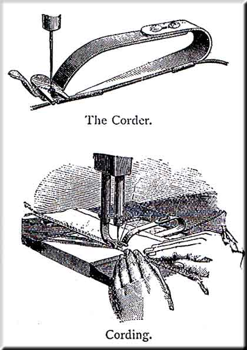
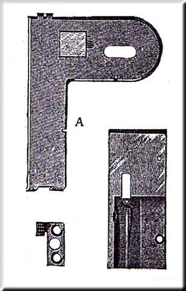

Various attachments for special kinds of work are made, among which are the following, which may be purchased from our Agents
Improved Tuck Marker -- Insert the loose end of the Connecting Rod (j) into the tube (k) and attach the Marker to the Cloth-Plate by means of the Screw which accompanies it, setting the Gauge (a) as far from the Needle as you desire the width of the Tuck, and after threading the Needle, place the end of the Operating Lever (s) under the end of the Needle-bar, with the Needle passing through the eyelet. Loosen the Clamp Screw (p) on the Gauge and set the Creaser (g) as far forward of the Needle as you wish to fold the cloth for the next Tuck, and tighten the screw. Place the cloth beneath the spring (t) and the Creaser, and regulate the Creaser to make a good mark by means of the Connecting Tube (k). Turning the Tube to screw the Screw out, increases, and in, diminishes the pressure. (Have only pressure enough to make a good mark). If the cloth does not follow the Gauge evenly, it is usually because the Gauge does not stand true. If, when the Gauge does stand true, the cloth works away from the gauge, it is because the point of the Needle is sprung too far back (i.e. towards the Gauge), and if the cloth climbs upon the Gauge, the Needle is sprung too far forward. See that the Needle goes perfectly true through the hole in the Cloth plate. Oil the joints at the back end of the Tucker and the Operating Lever where it slides in the Tube, and occasionally put the least drop possible in the joints of the Rocker (e) at the front end. If too much oil is put there it may run down and soil the goods. The under side of the Rocker may require oiling if used constantly, especially by steam power. If so, oil the edge of a bit of cloth slightly, and draw it under the Rocker.
To Cord -- Insert the steel-corder into the presser-foot in place of the glass, as shown in the cut. Draw the cord through the tube, and place one thicknes of cloth above and the other below it, and stitch as usual, being careful to guide the cloth so as to lay the sord close up in the fold, or to the cord last laid.
The tube should be so set as to deliver the cord into the groove in the bottom of the corder, and the presser-foot so set as to bring the line of stitching close to the cord.
The Seam Stay Foot or Trimmer -- is used, i some kinds of manufacturing, in stitching stay binding over seams to strengthen them, and also in stitching trimming upon ladies' and childrens' clothing.
Remove the steel presser-foot and insert the seam stay foot in its place. Pass the stay binding up through the first and down through the second slot, adjust the gauge to the width of the binding and the presser-foot so that the needle will strike the binding in the proper place. To use the above as a trimmer, insert the trimming the same as the stay binding and guide the garment to stitch the trimming in the place desired.
Improved Ruffler -- Connect the end of operating lever (2) with the projection on the needle-bar thred-guide, and screw the ruffler firmly to the machine by means of the thumb-screw, being careful that the needle passes through the centre of the hole in the spring under the presser-foot.
Insert the piece to which you wish to sew the ruffle beneath the lower blade, and the ruffle between the two lower blades of the ruffler. Set the machine for a short stitch to insure fine gathers.
Regulate the width of the seam by the adjustable gauge (5), and the fulness of the ruffle by means of the screw (6). Turning the screw in, increases, and out, diminishes the fulness.
It will often be found most convenient to gather and stitch the ruffle upon a narrow strip or band, and afterwards sew to the garments, using the band for a facing. The pressure on the presser-foot should be quite light for ruffling light, but should be greater for heavy material. Keep the wearing points properly oiled.
To Bind -- Pass the end of the binding through the binder, and set the guides to the width of the binding.Attach the binder to the cloth plate by means of the thumb-screw, and substitute the presser-foot which accompanies the binder for the ordinary one. Adjust the binder upon the cloth plate, so that the needle will strike the binding in the proper place. Pass the edge of the material through the binder and stitch as usual.
To Braid with the Under Braider -- Substitute the feed points and throat plate of the braider for those upon the machine. Pass the end of the braid through the slot in the throat plate and back over the feed points. Have the pattern stamped upon the back side of the material. Stitch as usual, following the pattern, and the braid will be stitched upon the right side of the material in the same design as the pattern. These throat plates are made in three sizes -- for coarse, fine, and medium braid.
The Adjustable Under Braider -- is used the same as the one before described, but may be adapted to any width of braid. Pass the braid through the slot, and beneath the small spring on the under side of the cover (A), and so adjust the slot to the width of the braid. Place the cover over the throat plate, so that the needle will strike the braid as desired, and secure it by means of the thumbscrew.
Extra Presser Feet -- The steel presser feet are used for some special kinds of manufacturing; the slotted one being for any which requires the use of very poor or rough thread on coarse work.
Leather Work -- The roller presser-foot, leather feed-points, and throat plate, are preferable where machines are required for leather stitching, and may be readily substituted for those which accompany the machine.
The Thread Oiler -- The object of the thread oiler is to prevent the thread from breaking when using poor thread, or in sewing hard, stiff goods, and also to keep the needle from gumming up when stitching patent leather. If preferable, however, the surface of patent leather may be slightly oiled before sewing, and the hard, stiff goods may be rubbed, where it is to be sewed, with hard, white soap.
Attach the thread oiler to the machine by inserting its stem into the hole at the right of the tension pulley, and secured by tightening the set screw in the arm. Saturate the pad with oil, and let the thread between the spool and the tension draw over it. When not required it may remain as in use, and the thread can be passed by the side of it.